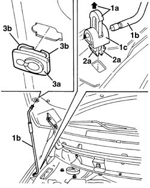
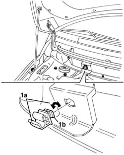

7025A58 DEVICE FOR HOLDING BONNET LID OPEN - R+R
- Path
- Procedures > 70 FITTINGS > 7025 COMPARTMENT LIDS > 7025A LOCATION OF BONNET WIND NOISE > 7025A58 DEVICE FOR HOLDING BONNET LID OPEN - R+R
- Kind
- repair procedure (removal / refitting; the operation number is the code)
- Applies to
- all engines; production: da 06/04
- Interactive page
- https://sloeber94.github.io/elrnDB-fMltpl/en/#/186003563
Applies to: all engines; production: da 06/04
 Removing
Removing
 Refitting
Refitting- Open the bonnet.
- Support the bonnet appropriately without using the bonnet stay, then lift up the retainer (1a) and extract the support (1b) from the mounting (1c).
- Completely extract the retainer (1a), then extract the mounting (1c) from the housing on the bodyshell, releasing the retainers (2a).
- Extract the mounting (3a) after having released the retainers (3b).

Applies to: all engines; production: da 06/04
- Rotate the mounting (1a) through 90° to release the retainer (1b), then extract it.

Applies to: all engines; production: da 06/04
Refitting
Removing- Check that the support and the other elements are not damaged.
- Fit the mounting in place and rotate it into the correct position.
- Position the upper support engaging the retainers.
- Position the support and lower mounting, attaching the retainers.
- Check the operation of the supporting device.